|
|


Wimmera : Homer Rieth
{kind=link}
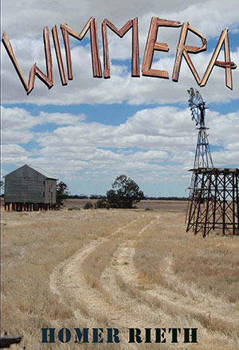
| Australia and New Zealand only Rest of the World |
Book Description
it leaves its mark he says
like a mirage on a melting road
the one you never took
the one you always took
the one you said you’d never take again
only a stone’s throw from bliss
a spit’s yard from the fountainhead
of a recurring dream
like a mirage on a melting road
the one you never took
the one you always took
the one you said you’d never take again
only a stone’s throw from bliss
a spit’s yard from the fountainhead
of a recurring dream
Replacing the battles of heroes and gods with the struggle of mortal humans with time and space, Homer Rieth in Wimmera re-invents the epic. All the classical elements are there but they are now democratic, and ours. The narrator’s anonymous informant knows a thing or two. Objective and personal, learned and demotic, local and vast, Wimmera is the history of a region and seedbed of a vision where ‘the bunyip indeed lays down with the manticore.’ There is nothing like it anywhere.
It’s an impressive achievement, and a remarkable piece of work.
Paul Kane
Vassar College
Cover photograph:
David Brooke
ISBN 9781876044619
2009
374 pgs
$39.95 Australia
$49.95 International
|
PART
ONE
And the length and breadth of those summers the back of them fading into a blank-stare distance towards nothing remotely on the horizon the horizon itself a vanished thing its whirlpools of heat its wash of haze cotton thread clouds unravelling and the light in a bare-faced sky drifting towards an abyss an edge that the eye cannot see the last long rays of sunlight in the grass stalling the innocent and patient stars once again he says you’ve come here this place of perdurable memory place of silences sounding of water soughing over rocks of reeds returning the purl and lap of water down to the last trickle rock water reed each remaining calmly within the confines of its own nature leaving the scrawl of their signature on creek beds on windrows on sandy stretches holding out for the slake and quench of trunk bole branch leaf shade and within and around these surface tensions on the branches of enduring trees birds swing or swoop off shedding their wings on boxwood ghost gum Norfolk Island pine asking nothing of the going down evening of the coming on night attuned only to what has already been granted and the day with its last calico gleam lingers thinking about it the cobweb of its hours clinging like a promise to what it can’t remembering promising something more tenuous than a hope that this night may for once be prevailed upon to keep at bay despair’s onset the only thing that makes hope possible §
a year five years ten perhaps and the ivy runs wild over the wall the hard cold ground grows harder colder than ever and the heart once a seat of animal radiance is now tongue-tied like a child’s first confession and the soul’s is only a reflected light all cast and filigree of leadlight of iron and half-life the road has vanished into a tangle of wrong turns and only the poplars swaying in the wash up of the road retain a sense of their place and métier understand the order of things and looking at it for long enough you take a leaf out of their book the book of the winds turn the pages of the horizon one by one or flick back and find to your surprise to your dismay the fable of your own life how everything in it is in the gun sights of the hunter time and the length of the tale like those summers those blank-faced winters hangs upon what lies between the lines what is heard not as a sound but only as an echo of something soundless like the terpsichore of the clouds and of where or when they may tell you but nothing of why somewhere nowhere never the unknown the murmur inland once remembered as a fog horn on the shore of a shipwreck coast a place beyond what it used to be called before it lay beyond reach of what they call it now this fetch of scrub this fosse of creek bulrush and boulder country a scree of endless scrub the black stump’s last resting place now an eyrie of the wind where the flat sweeps pick up the raging static of the constellations and the mullet-faced moon is left speechless in a fugitive sky |
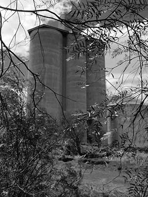 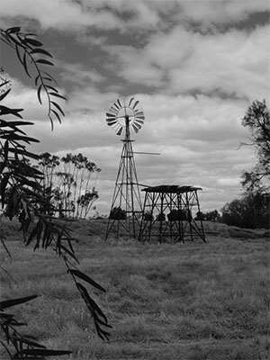  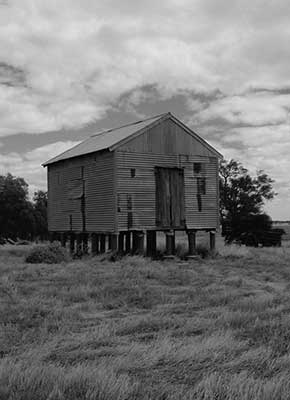  ©
Photos - David Brooke
|
{kind=link}
Foreward
Dr Justin Clemens
University of Melbourne
Wimmera is a brilliant piece of work. The sweep of the poem is genuinely epic - in both the commonsense and more technical use of this term. Divided into twelve major books, each book moves through the experience of a particular place: discoveries, establishments, characters, events, the contingencies and violence of settlement and the unexpected profusions of the natural environment. As one reads, the poem shifts between autobiography, regional matters, national concerns, universal declarations and back again, encompassing an incredible range of forms. Vernacular ejaculations mingle with scientific and technical expressions, fragments of foreign languages with basic Anglo-Saxon words, the earthy with the astral, intricate descriptions with enthusiastic apostrophe. Such opposites are often fused in Rieth’s recognisable and singular voice, where they can return in ever-shifting forms (the ‘forever shifting key’) or more directly as refrains: ‘sweet Mother Mary Philomena...’
From hard-nosed detail, the verse can suddenly - but without undue shock - modulate towards metaphysical concerns, shifting from the production of foodstuffs to the cursive signature of a lifetime’s singular turns. In such vignettes one can also hear resonances from the history of modern Australian poetry, from the early nineteenth century to the present, from Barron Field and Charles Harpur, through Lawson, Gordon, Kendall, to A.D. Hope and Les Murray. The formal, stylistic repetitions and divergences take us simultaneously forwards and backwards, forward into the poem and its future, backwards into historical and environmental events. The very opening of the poem on a horizonless threshold, the disappearance of recognisable features in an indeterminate zone, is a contemporary version of the classical invocation to the inspiration of the God or Muse.
From this vanishing of detail in the eclosion of a meditative experience - I thought here both of the opening lines of Conrad’s Heart of Darkness, or Proust’s madeleine - Rieth clears a space for a supra-personal memory to arise. From this clearing of world for the return of memory, we are quickly delivered to the natural details of streams and pine, cobweb and hamlet, and from there to names and catalogues. There are allusions to other canonical poems, with echoes of Shakespeare and Milton, Blake and Wordsworth, Eliot and Pound. Throughout the poem one cannot miss Rieth’s ceaseless tampering with the line, with its length and rhythm, with the relationships between sense and enjambment, with stanza and section, and with punctual imagery and structural concern.
Despite its admirable range, Wimmera never loses its focus, bringing together an extraordinary vocabulary and a sensitivity to language and its rhythms with historical and environmental knowledge. In its architectonics, it is clearly the consequence of an ambitious vision; in its imagery and metre, it draws from and extends the technical innovations of modernism; in its attention to the specificities of place, it implicates the obsessions of romanticism; in its historical and political details, it encompasses and re-presents fascinating regional details; in its spiritual vision, it is reminiscent of the cosmic speculations of Wordsworth and Whitman.’
Photo Gallery
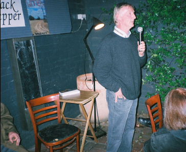 |
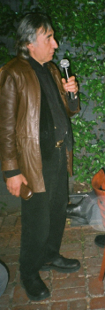 |
Melbourne
Launch - North Fitzroy Arms 2009
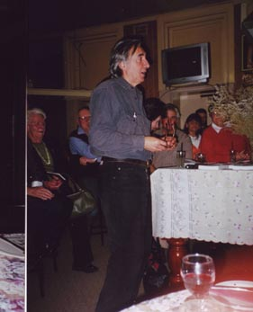 |
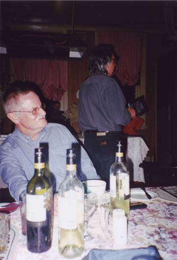 |
Minyip
Launch - Commercial Hotel 2009
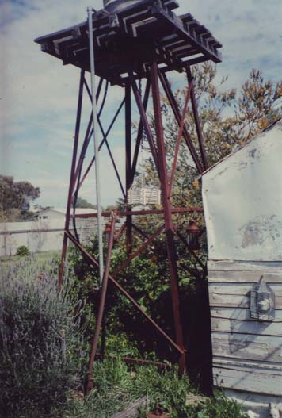 |
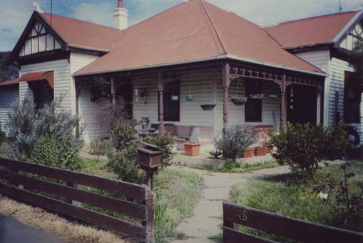 |
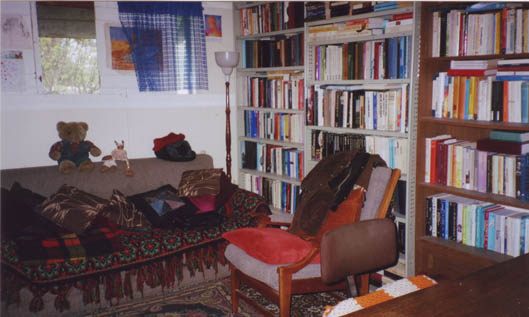 |
Homer
Reiths Minyip House
Landline - Homer's Epic Tim Lee - Reporter ABC-TV Broadcast: 21/02/2010 1:38:53 PM Click this link to watch Homer's Epic |
Homer Rieth reads his epic poem Wimmera
| Introduction |
|
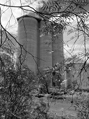 |
Book
1 - Jackson
Siding |
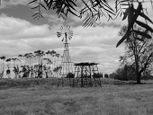 |
Book
2 - The Road
To Wal Wal |
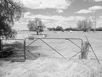 |
Book 3 - Wide Blue Yonder |
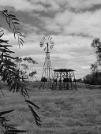 |
Book 4 - Ashens |
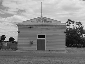 |
Book 5 - Sheep Hills |
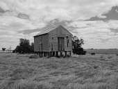 |
Book 6 - Navarre |
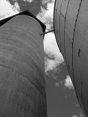 |
Book 7 - Pearl Barley |
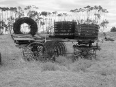 |
Book 8 - Florida Villas |
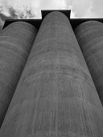 |
Book 9 - Marnoo |
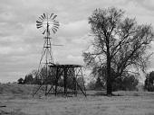 |
Book 10 - Mutton Swamp |
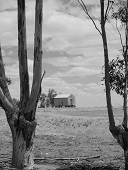 |
Book 11 - Tap Roots |
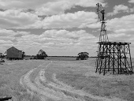 |
Book 12 - Aldebaran And Beyond |
Knuckled Earth
Brian Edwards
Australian Book Review,
December 2009-January 2010, No. 317
That Homer Rieth
is one
of the finest
lyric poets writing in Australia was apparent with the publication in
2001 of his collection The
Dining Car Scene. Now, with Wimmera,
his lyric strengths are displayed in epic form. Presented in twelve
books and 374 pages, initially titled ‘A Locale of the
Cosmos’, grand in conception and impressively detailed in
execution, this is a significant achievement indeed, and a major
contribution to Australian literature.
Wimmera is conceived not only in terms of specificities of place but in the company of poets. Although it is constructed without their heroic figures, gods and great battles, it acknowledges the classical epic tradition of Homer, Virgil and Dante; its democratic spirit recalls Whitman; and, above all, its lyrical attention to landscape and nature is essentially Romantic. Fellow travellers include the primary English Romantic poets - Wordsworth, Coleridge, Keats and Shelley - together with Hopkins, Yeats, Eliot and John Shaw Neilson. Indeed, it may be said, the poem’s reach extends well beyond the Wimmera landscape that is its primary focus, since a European splendour, with references to Spain, Italy, Germany, France and England, is brought to bear in various ways upon the local. Operating not as ornamental intrusions but as part of the work’s informing sensibility, these references, often covert, establish connections that are philosophical, aesthetic, cultural and historical. They underscore an interplay throughout between particular and other, here and elsewhere, this time and other times, specifically Australian and broadly human.
Nevertheless, though its reach is vast, Wimmera is grounded in the local. The poet works as botanist, geologist, meteorologist, archaeologist, farmer and cultural historian, incorporating many voices within the narrator’s tireless curiosity, generosity and celebratory mode, and introducing them so often with ‘you see he says’ or ‘tells me he does’. Yarns mix easily with reports, observations and enquiries, the present with the past; the language is both colloquial and learned. As Rieth knows, naming conjures things to life and significance. There are memorable litanies here of places, geographical features, people and practices. Paying court to local history, glossing specific detail with the intrigue of suggestion, they also have a cumulative and lyrical power.
In the poetry of Wimmera, whatever the referent, there is a fine degree of self-conscious attention to language. Book Nine, ‘Marnoo’, includes a section that exemplifies the epic’s procedure. Beginning with a deceptively casual portrait of a little girl who looks ‘so like a McAllister’, plays hopscotch and sings ‘London Bridge and Camden Town’, it includes an echo of lines from Hamlet, refers to Minyip as ‘a locale of the cosmos’, and then, after Whitman, presents a two-and-a-half page list of sharply particularised names of district people. It concludes:
The poetic embrace is typically inclusive, and also affectionate. Everything is precious and worth attention, from the people introduced by name and through their myriad activities to the detail of landforms, geological substrata, plants, animals and the overarching sky.
There is a journey at the heart of this epic, not one centred on Ithaca or Paradise but ranging across place and time, involving discovery and recovery. This perspective is repeated with many variations. In its simplicity and complexity, the journey motif prefigures all movement and discovery, and its possibilities are endless. Not the classical journey of the wandering hero, not Joseph Campbell’s monomyth in its archetypal dimensions, the traveller’s journey in Wimmera is less concerned with monumental figures and stages than with the spirit of place as it may be experienced by mortals. It is littered with names rich in associations - Lubeck, Wai Wai, Glenorchy, Callawadda, Minyip, Navarre, Ashens, Sheep Hills, Marnoo, Dimboola, Nhill, Wycheproof - and its vast collection of characters includes such figures as hard-riding Dan Morgan, Mister Bolton, Searcher of Customs for the Wimmera, Nagassa Singh the Indian hawker, Sister Murray in her old Austin Seven, and any number of farmers, townsfolk, knockabout workers, wanderers and yarn-spinners, men and women, as the local becomes legendary and then mythic.
Coming to vivid life in the poetry, this is a landscape of knuckled earth, flat plains, rivers and creeks, trees, grass, farmers’ paddocks, sheep and cattle, roads and railway lines, silos, shacks, homesteads and towns. It is filled with sunlight, mist, shadow and the shifting sounds of human activity.
Wimmera is an epic that reads like a wonderfully expanded lyric. Finely detailed, wide-ranging, democratic in spirit, inventive and celebratory, it presents a moving testament to a particular part of the Australian landscape, to its forms and history, as well as a profound sense of how definitions and understandings are made, change and pass on. As Homer Rieth shows, space is negotiable, time shifts gears and the moment may be infinitely valuable.
Wimmera is conceived not only in terms of specificities of place but in the company of poets. Although it is constructed without their heroic figures, gods and great battles, it acknowledges the classical epic tradition of Homer, Virgil and Dante; its democratic spirit recalls Whitman; and, above all, its lyrical attention to landscape and nature is essentially Romantic. Fellow travellers include the primary English Romantic poets - Wordsworth, Coleridge, Keats and Shelley - together with Hopkins, Yeats, Eliot and John Shaw Neilson. Indeed, it may be said, the poem’s reach extends well beyond the Wimmera landscape that is its primary focus, since a European splendour, with references to Spain, Italy, Germany, France and England, is brought to bear in various ways upon the local. Operating not as ornamental intrusions but as part of the work’s informing sensibility, these references, often covert, establish connections that are philosophical, aesthetic, cultural and historical. They underscore an interplay throughout between particular and other, here and elsewhere, this time and other times, specifically Australian and broadly human.
Nevertheless, though its reach is vast, Wimmera is grounded in the local. The poet works as botanist, geologist, meteorologist, archaeologist, farmer and cultural historian, incorporating many voices within the narrator’s tireless curiosity, generosity and celebratory mode, and introducing them so often with ‘you see he says’ or ‘tells me he does’. Yarns mix easily with reports, observations and enquiries, the present with the past; the language is both colloquial and learned. As Rieth knows, naming conjures things to life and significance. There are memorable litanies here of places, geographical features, people and practices. Paying court to local history, glossing specific detail with the intrigue of suggestion, they also have a cumulative and lyrical power.
In the poetry of Wimmera, whatever the referent, there is a fine degree of self-conscious attention to language. Book Nine, ‘Marnoo’, includes a section that exemplifies the epic’s procedure. Beginning with a deceptively casual portrait of a little girl who looks ‘so like a McAllister’, plays hopscotch and sings ‘London Bridge and Camden Town’, it includes an echo of lines from Hamlet, refers to Minyip as ‘a locale of the cosmos’, and then, after Whitman, presents a two-and-a-half page list of sharply particularised names of district people. It concludes:
I speak of them all and of those
I have left un-named
they too shall be remembered
the town aristocracies and the in-betweeners
the upside-downers and the inside-outers
the ‘blow-ins’ the blown around and the blown out
I speak of a place that touches upon all places
that was and still is
one of a kind
they too shall be remembered
the town aristocracies and the in-betweeners
the upside-downers and the inside-outers
the ‘blow-ins’ the blown around and the blown out
I speak of a place that touches upon all places
that was and still is
one of a kind
The poetic embrace is typically inclusive, and also affectionate. Everything is precious and worth attention, from the people introduced by name and through their myriad activities to the detail of landforms, geological substrata, plants, animals and the overarching sky.
There is a journey at the heart of this epic, not one centred on Ithaca or Paradise but ranging across place and time, involving discovery and recovery. This perspective is repeated with many variations. In its simplicity and complexity, the journey motif prefigures all movement and discovery, and its possibilities are endless. Not the classical journey of the wandering hero, not Joseph Campbell’s monomyth in its archetypal dimensions, the traveller’s journey in Wimmera is less concerned with monumental figures and stages than with the spirit of place as it may be experienced by mortals. It is littered with names rich in associations - Lubeck, Wai Wai, Glenorchy, Callawadda, Minyip, Navarre, Ashens, Sheep Hills, Marnoo, Dimboola, Nhill, Wycheproof - and its vast collection of characters includes such figures as hard-riding Dan Morgan, Mister Bolton, Searcher of Customs for the Wimmera, Nagassa Singh the Indian hawker, Sister Murray in her old Austin Seven, and any number of farmers, townsfolk, knockabout workers, wanderers and yarn-spinners, men and women, as the local becomes legendary and then mythic.
Coming to vivid life in the poetry, this is a landscape of knuckled earth, flat plains, rivers and creeks, trees, grass, farmers’ paddocks, sheep and cattle, roads and railway lines, silos, shacks, homesteads and towns. It is filled with sunlight, mist, shadow and the shifting sounds of human activity.
Wimmera is an epic that reads like a wonderfully expanded lyric. Finely detailed, wide-ranging, democratic in spirit, inventive and celebratory, it presents a moving testament to a particular part of the Australian landscape, to its forms and history, as well as a profound sense of how definitions and understandings are made, change and pass on. As Homer Rieth shows, space is negotiable, time shifts gears and the moment may be infinitely valuable.
| Dr Brian Edwards writes literary theory and criticism, fiction and poetry. Retired from Deakin University (Geelong) where he was a foundation member of the academic staff, he lives in Port Fairy and continues to convene the DLS Literary Society and to edit Mattoid, a journal of literary and cultural studies. His writing has been published in books and journals in the UK, USA, Canada, New Zealand and Australia. His books include the critical study Theories of Play and Postmodern Fiction (published in New York and London), two collections of poetry (All in Time and The Escape Sonnets) and more than 25 edited collections (of essays, poetry and fiction). He has recently completed a novel manuscript and a collection of prose poems on film. He has a forthcoming collection of poetry In the Real World and is working on a study of recent American fiction’s uses of history. |
Inverse Perspectives on the Maturing Voice
[reviewing Wimmera and Fuel by Andrew Sant]
Geoffrey Lehmann
The Weekend Australian
7/11/ 2009
Why do some poets,
like
some people,
do their best work early, and others continue improving and peak in
their late 40s or 50s? While editing an anthology of Australian poetry,
this has been on my mind. Kenneth Slessor, Henry Lawson, Christopher
Brennan and Banjo Paterson had virtually exhausted themselves as poets
by the time they reached 40. But Slessor’s friend, R.D.
FitzGerald, matured as a poet only after reaching that age.
Goethe and Yeats continued developing until late. For male poets, at least, it may be necessary to have an argument with oneself if one is to continue developing. Goethe rejected the romantic storm and stress of his youth, and embraced classicism and balance. Yeats rejected the lushness of his early poetry for a language that was stripped back and closer to everyday speech, the famous ‘cold eye’ of his epitaph.
With female poets, a decision to have an argument with oneself may not be needed. Biology may force the issue. When reading the poetry of Elizabeth Riddell, one of our good middle-ranking poets, I was struck by how free her poetry became once she reached her late 40s, as though a burden had been lifted from her. Jennifer Maiden, one of our best contemporary poets, has even written a poem about it, ‘Menopause as a Bee Freed from a Fairy Floss Machine’. The title of this stunningly good poem says it all.
Both books, Fuel and Wimmera, are the work of mature poets. Andrew Sant was born in London in 1950 and came to Australia with his parents in 1962. Homer Rieth was born in Germany of German and Georgian parents in 1947 and came to Australia in 1952. Both poets are published by Black Pepper, founded by the feisty Kevin Pearson, himself a noted poet. Black Pepper is one of the livelier new houses that has sprung up after the large publishers decided to exit poetry publishing.
That’s about where the similarities between Sant and Rieth stop. Sant has a long publishing history, going back to 1980; Fuel is his 11th published volume of poetry. He writes short, mainly domestic poems, and is able to tease significance and a sense of profundity out of everyday things with wit and ingenuity.
Although a few years older than Sant, Rieth has a short publishing history, starting in 2001, and Wimmera is just his second published volume of poetry. In contrast to Sant’s short poems, Wimmera is a single epic of more than 300 pages, a leviathan of a poem, cosmic in its ambition and symphonic in its approach.
In 1983, as editors of an anthology, Robert Gray and I wrote: ‘Sant’s poetry seems very English in its reticence and use of the middle tone of voice. He always deals directly with experience... His strength is his interest in and close observation of other people, combined with a classical openness of style and freedom from affectation.’
These comments about Sant in 1983 are still true, except that his syntax, which was always a bit complex, has become more complex and circuitous, and his poetry is drier in tone; perhaps too dry and sinewy at times.
He has continued to grow and develop as a poet because his poetry thrives on wit and intelligence rather than on hormones.
Take ‘Rock Music’, for example, a poem not about a type of popular music. It’s about ‘the frequencies of stones’, the music of geology. Sant is a poet of precision and imagination. In ‘Given’, after the inaction of listening to the news and hours at a computer, he starts digging in the garden:
Goethe and Yeats continued developing until late. For male poets, at least, it may be necessary to have an argument with oneself if one is to continue developing. Goethe rejected the romantic storm and stress of his youth, and embraced classicism and balance. Yeats rejected the lushness of his early poetry for a language that was stripped back and closer to everyday speech, the famous ‘cold eye’ of his epitaph.
With female poets, a decision to have an argument with oneself may not be needed. Biology may force the issue. When reading the poetry of Elizabeth Riddell, one of our good middle-ranking poets, I was struck by how free her poetry became once she reached her late 40s, as though a burden had been lifted from her. Jennifer Maiden, one of our best contemporary poets, has even written a poem about it, ‘Menopause as a Bee Freed from a Fairy Floss Machine’. The title of this stunningly good poem says it all.
Both books, Fuel and Wimmera, are the work of mature poets. Andrew Sant was born in London in 1950 and came to Australia with his parents in 1962. Homer Rieth was born in Germany of German and Georgian parents in 1947 and came to Australia in 1952. Both poets are published by Black Pepper, founded by the feisty Kevin Pearson, himself a noted poet. Black Pepper is one of the livelier new houses that has sprung up after the large publishers decided to exit poetry publishing.
That’s about where the similarities between Sant and Rieth stop. Sant has a long publishing history, going back to 1980; Fuel is his 11th published volume of poetry. He writes short, mainly domestic poems, and is able to tease significance and a sense of profundity out of everyday things with wit and ingenuity.
Although a few years older than Sant, Rieth has a short publishing history, starting in 2001, and Wimmera is just his second published volume of poetry. In contrast to Sant’s short poems, Wimmera is a single epic of more than 300 pages, a leviathan of a poem, cosmic in its ambition and symphonic in its approach.
In 1983, as editors of an anthology, Robert Gray and I wrote: ‘Sant’s poetry seems very English in its reticence and use of the middle tone of voice. He always deals directly with experience... His strength is his interest in and close observation of other people, combined with a classical openness of style and freedom from affectation.’
These comments about Sant in 1983 are still true, except that his syntax, which was always a bit complex, has become more complex and circuitous, and his poetry is drier in tone; perhaps too dry and sinewy at times.
He has continued to grow and develop as a poet because his poetry thrives on wit and intelligence rather than on hormones.
Take ‘Rock Music’, for example, a poem not about a type of popular music. It’s about ‘the frequencies of stones’, the music of geology. Sant is a poet of precision and imagination. In ‘Given’, after the inaction of listening to the news and hours at a computer, he starts digging in the garden:
Gigantic, the fresh spadefuls
of planet; wrecked worms
like swimmers fighting
incredible turbulence.
of planet; wrecked worms
like swimmers fighting
incredible turbulence.
His adoption of
the
worm’s viewpoint and his choice of the word planet are quite
remarkable.
Perhaps the pick of the poems in this book is his elegy for a fellow poet, Margaret Scott. ‘The Fires’ also may be a poem of farewell to Tasmania, the island where he has spent much of his life. Flying out of Tasmania over a bushfire, he thinks of Margaret Scott, two of whose houses were incinerated in fires, and who always said to him, in a motherly way between cigarettes, ‘Now tell me what you’ve been doing/and where you’ve been.’ He also remembers how Margaret used to keep herself awake while driving at night by repeatedly shouting, ‘Elephants! Elephants!’
Rieth’s first volume of poetry, The Dining Car Scene, published when he was in his 50s, was an elusive book. The title poem was a virtuoso piece describing with great precision a scene from Alfred Hitchcock’s North by Northwest. But it was hard to make out what he stood for. Rieth has been a teacher of Greek and Roman literature and the one thing that was clear was his love of language.
Wimmera is an extraordinary poem, comprising 12 books, each of two parts. Rieth moved to Minyip in the Wimmera district of Victoria in 1999. At a basic level the poem reflects Rieth’s feelings for a landscape and people he has come to love.
Each book, we are told in an introductory note by Justin Clemens, ‘moves through the experience of a particular place: discoveries, establishments, characters, events, the contingencies and violence of settlement and the unexpected profusions of the natural environment.’
The poem reaches its climax in part one of Book 12, where Rieth moves from the profusions of drought and flood of the Wimmera and addresses the ‘countless curvatures of space/an atoll of time in an ocean of infinitude/the starry night is no more than time/only space only/the inaudible overheard’.
The long, sinuous sentences of the poem have passages of bravura language. This is how Rieth summarises the life and death of poet Adam Lindsay Gordon: ‘trooper Gordon... between poignant poems/... had seen how over the jumps a horse instinctively picks up a/certain tempo/by the time it covers the distance the tempo has become a heartbeat/tbe grace of its motion almost supernatural/and yet he shot himself as if the shot ringing out might make for/the sound of a caesura’.
This technically brilliant passage reveals one of the weaknesses of Wimmera. Gordon’s tragic suicide is treated almost flippantly. The consistently heroic tone of the poem, although it knits it together musically, sometimes places too great a distance between the reader and details that might have engaged our sympathy.
My second grouch is the deliberate use of cliche, such as ‘drunk as skunks’, ‘back of beyond’.
I realise that the father of European poetry, Homer, also used cliches such as ‘wine-dark sea’ but that does not justify their use here.
Notwithstanding these faults, Wimmera is quite extraordinary: it reads like a young man’s poem, with its ebullience, panache, occasional passages of juddering bathos, and its hormonal music.
Perhaps the pick of the poems in this book is his elegy for a fellow poet, Margaret Scott. ‘The Fires’ also may be a poem of farewell to Tasmania, the island where he has spent much of his life. Flying out of Tasmania over a bushfire, he thinks of Margaret Scott, two of whose houses were incinerated in fires, and who always said to him, in a motherly way between cigarettes, ‘Now tell me what you’ve been doing/and where you’ve been.’ He also remembers how Margaret used to keep herself awake while driving at night by repeatedly shouting, ‘Elephants! Elephants!’
Rieth’s first volume of poetry, The Dining Car Scene, published when he was in his 50s, was an elusive book. The title poem was a virtuoso piece describing with great precision a scene from Alfred Hitchcock’s North by Northwest. But it was hard to make out what he stood for. Rieth has been a teacher of Greek and Roman literature and the one thing that was clear was his love of language.
Wimmera is an extraordinary poem, comprising 12 books, each of two parts. Rieth moved to Minyip in the Wimmera district of Victoria in 1999. At a basic level the poem reflects Rieth’s feelings for a landscape and people he has come to love.
Each book, we are told in an introductory note by Justin Clemens, ‘moves through the experience of a particular place: discoveries, establishments, characters, events, the contingencies and violence of settlement and the unexpected profusions of the natural environment.’
The poem reaches its climax in part one of Book 12, where Rieth moves from the profusions of drought and flood of the Wimmera and addresses the ‘countless curvatures of space/an atoll of time in an ocean of infinitude/the starry night is no more than time/only space only/the inaudible overheard’.
The long, sinuous sentences of the poem have passages of bravura language. This is how Rieth summarises the life and death of poet Adam Lindsay Gordon: ‘trooper Gordon... between poignant poems/... had seen how over the jumps a horse instinctively picks up a/certain tempo/by the time it covers the distance the tempo has become a heartbeat/tbe grace of its motion almost supernatural/and yet he shot himself as if the shot ringing out might make for/the sound of a caesura’.
This technically brilliant passage reveals one of the weaknesses of Wimmera. Gordon’s tragic suicide is treated almost flippantly. The consistently heroic tone of the poem, although it knits it together musically, sometimes places too great a distance between the reader and details that might have engaged our sympathy.
My second grouch is the deliberate use of cliche, such as ‘drunk as skunks’, ‘back of beyond’.
I realise that the father of European poetry, Homer, also used cliches such as ‘wine-dark sea’ but that does not justify their use here.
Notwithstanding these faults, Wimmera is quite extraordinary: it reads like a young man’s poem, with its ebullience, panache, occasional passages of juddering bathos, and its hormonal music.
Wimmera
Pamela Brown
Overland, Issue 199, Winter 2010
‘Wimmera’ is a classical epic poem about the Victorian district in which Homer Rieth lives. Here, though, the poet substitutes human beings for gods and goddesses. The scope and ambition in this grand poem is laudable.
Interestingly, Rieth is a long-ago migrant to Australia, and there is a distinctly European philosophical subtext here, as is to be expected in an epic - ‘so what is it then about any place/that fills and empties alike/the world with its life’. The poem does, however, have its historical heroics that should please those who enjoy Australian idiosyncrasies - ‘I can still see he says Jim Hardingham’s bullockies/the bales stacked four storeys high/on top of them a bunch of shearers with the look in their eyes/of a job well done’. There are also many passages of descriptive, uncontrived pastoral poetry that flow easily and with a certain beauty
.
Although divided into twelve sections, at 360 pages the poem is a bit relentless, having little variation in tone throughout - this in spite of Rieth’s rich imaginings and admirable tenacity. It was composed as part of his Doctorate of Creative Arts, and that probably explains its length, which might be a problem in an age of shrinking attention spans. [Note: in fact, two sections of Wimmera were written after the author completed his Doctorate.] No matter how judicious and broad the reportage, range of form and topic, antitheses of allusion and the literal, I found that I began to flip through sections and felt that it might be easier to come to know the Wimmera by reading an actual history of the district. (I hear lovers of epic poetry howling!)
Overland, Issue 199, Winter 2010
‘Wimmera’ is a classical epic poem about the Victorian district in which Homer Rieth lives. Here, though, the poet substitutes human beings for gods and goddesses. The scope and ambition in this grand poem is laudable.
Interestingly, Rieth is a long-ago migrant to Australia, and there is a distinctly European philosophical subtext here, as is to be expected in an epic - ‘so what is it then about any place/that fills and empties alike/the world with its life’. The poem does, however, have its historical heroics that should please those who enjoy Australian idiosyncrasies - ‘I can still see he says Jim Hardingham’s bullockies/the bales stacked four storeys high/on top of them a bunch of shearers with the look in their eyes/of a job well done’. There are also many passages of descriptive, uncontrived pastoral poetry that flow easily and with a certain beauty
.
Although divided into twelve sections, at 360 pages the poem is a bit relentless, having little variation in tone throughout - this in spite of Rieth’s rich imaginings and admirable tenacity. It was composed as part of his Doctorate of Creative Arts, and that probably explains its length, which might be a problem in an age of shrinking attention spans. [Note: in fact, two sections of Wimmera were written after the author completed his Doctorate.] No matter how judicious and broad the reportage, range of form and topic, antitheses of allusion and the literal, I found that I began to flip through sections and felt that it might be easier to come to know the Wimmera by reading an actual history of the district. (I hear lovers of epic poetry howling!)
FORM AND MEANING: The Contemporary Epic of Landscape
From the Homer Rieth's Exegesis
My aim, in undertaking this project, has been to produce a literary work within the epic genre, one that is both demonstrably contemporary and distinctively Australian. As I have argued in the preceding chapters, Wimmera does not claim to be an epic shaped according to the traditional pattern, nor does it concern itself with the elaboration of traditional themes. In its departure from the heroic and classical patterns laid down in the earliest forms of the genre, it is representative of another kind of tradition, one of generic renewal and innovation, that may be traced back to the ‘The Prelude’ and to the influence of that poem upon all subsequent works composed on an epic scale. Furthermore, in keeping with Wordsworth’s project, it also reflects the increasingly autobiographical and, indeed personal, character of epic, indicative of the genre’s changing functions within the broader historical spectrum of the genre.
In considering the poem’s compositional elements, I have aimed for a style that, despite its departures from convention, retains many of the traditional features of epic. Not least among these are the qualities of irony and detachment, of a certain stoical dignity in the speaking voice. The tenor of this voice amply conveys a cast of mind given to personal reflection and to what Bloom has described as the process of ‘self-overhearing’:
this morning a mist
shrouds the stream of Orpheus
I hear shots across the paddocks
and wonder what innocent sleep
is being disturbed for the last time
light rain is falling
and souls are leaving bodies
I am all aflame and yet unmoved
the moon takes its bearings from the silos
the wind looks over its shoulder at Sheep Hills
the land he says remembers you
as mind reflecting on it like sunlight
this is the moment of illumination
the mind and the landscape
are one
I hear shots across the paddocks
and wonder what innocent sleep
is being disturbed for the last time
light rain is falling
and souls are leaving bodies
I am all aflame and yet unmoved
the moon takes its bearings from the silos
the wind looks over its shoulder at Sheep Hills
the land he says remembers you
as mind reflecting on it like sunlight
this is the moment of illumination
the mind and the landscape
are one
A central motif within the epic narrative of Wimmera is to be found in its imaginative reconstruction and commemoration of pioneer settlement. The poem traces the history of early white settlement in the Wimmera region and the struggles and hardships of its pioneers. In doing so, the poem demonstrates a consciousness of the continuities of the epic tradition. It explores the heroic, albeit in a rural context and, in doing so, gives voice to a body of regional traditions and values, to a way of life that is recognizably Australian, yet of universal reach. As in ancient epic, it brings into bold relief both individuals and communities and, in the process, reveals the distinctive features, social and psychological, that give shape to a cultural identity.
At the same time the poem gives expression to the character of a privileged landscape, the Wimmera region of Victoria, presented not only as a geographical entity, whose monumental dimensions find their corollary in those of the genre itself, but also as an imagined landscape. At both of these levels, the poem incorporates the emotional and spiritual, as well as the topographical dimensions of place and locale, as they have been gathered up in the history and chronicles of the region and in the cumulative power of legend and memory attaching, in particular, to places of isolation and remove. One of the poem’s primary impulses is to sing in the heroic key of traditional epic, but in order to capture a more complex heroic note, one whose tonalities, given the Australian and, specifically rural, context of the poem and indeed, the proverbial self-deprecation of the Australian character, register a restrained and ironic grandeur, a reluctance towards displays of self-importance, in keeping with its subject and with the nature of the landscape itself.
Wimmera is, then, an epic of landscape, located within a tradition of poetry in Australia that has long been dominated by the question of landscape, arguably the continent’s central artistic preoccupation, as far back as the immemorial songlines of its indigenous inhabitants. ‘Australian poetry’, Brian Elliott has observed:
‘has taken well
over a century
and a half to establish its quality and define its character. In all,
or during most of this time, it has been in one way or another
preoccupied with definition either of the landscape itself or the
relationship between landscape and society.’
Nevertheless, the poem does not treat the landscape or its historical acculturations in indigenous terms, for reasons that I have already discussed. Rather, the poem reflects, within the purview of European settlement, the region’s historical and cultural milieu and its geography through European-Australian eyes, as indeed, it must, if it is to convey the truth of autobiographical epic, as well as addressing wider themes, such as the psychological and spiritual effects of landscape and the persistence of memory. Such themes are, of course and, have always been, manifestly epic concerns.
Wimmera does not pretend to be a history of the region, or of a particular period; in keeping with the traditions of epic, it attempts, however, an imaginative rendering of a chosen world, whose realities are at once, local and specific, but also universal. For instance, in Book Two, ‘The Road to Wal Wal’, the Ebenezer mission becomes, in poetic terms, the site of a meditation on human transience and mutability, rich in irony. The character of a remote locale may reflect the coloration of its local and regional elements, yet also convey something important about the author’s feelings towards the wider cosmos:
all gone fella only
broken English
for your last words
so the pigs were let go and the draught horses
the spring dray and the treasures of flock and kapok
bedsteads mattresses fenders looking glasses
lamps and fly-proof doors and tanks and utensils
even the lovely harmonium
all gone fella in a waste of tears
all gone the cart upset of apples
all gone pastor Bogisch of the blazing eyes and jet black beard
all gone into the rock-hard soil
all gone the church its windows blown out
its walls a shambles
all gone fella
gone
all gone
for your last words
so the pigs were let go and the draught horses
the spring dray and the treasures of flock and kapok
bedsteads mattresses fenders looking glasses
lamps and fly-proof doors and tanks and utensils
even the lovely harmonium
all gone fella in a waste of tears
all gone the cart upset of apples
all gone pastor Bogisch of the blazing eyes and jet black beard
all gone into the rock-hard soil
all gone the church its windows blown out
its walls a shambles
all gone fella
gone
all gone
The tenor of this passage is reflective of the wider scale of ironies dealt with in Book Two, where the reader or listener may observe how the language of the poetry itself works to subvert both the stereotypes of history and genre alike.
Indeed, ‘The Road to Wal Wal’ offers the reader the opportunity to observe the ways in which ironic subversion may be seen to operate in epic as a generic constant. As Webber has pointed out, each epic invariably subverts the assumptions of its antecedents, as may be seen, for instance, in Virgil’s handling of Homeric themes. In her discussion of the tradition, (which I have treated in more detail in Chapter one), Webber highlighted a number of ways in which the original functions of epic have been altered or distorted, in order to reflect significant changes in the preoccupations and interests of poets. It is, perhaps, partly due to this history of ironic subversion, that epic has sometimes been regarded as a mixed genre. In Wimmera ironic subversion works itself into the historical record, in order to calibrate the idea of the ‘heroic’ and of ‘heroic proportion’ in a recognizably Australian mode, as the following passage suggests:
remember sweet
mother
England her green meadows
chill smells of the old country
a carillon of bells drifting over the fens
here over crab-holes at Murra Warra and Pimpinio
over seed wheat and shag
church pitchin’ on Hospitality Sunday
counting shorthorns counting clydesdales you know he says
they counted them at Dadswells Bridge
the Berkshire pigs at Wallup
the truncheons of vines and olives to bursting
nature’s hand of hidden powers by her fruits shall you know her
that said this fetch of God’s earth so sparse
the sussurations of a hidden stream
are a kind of hesitation in the flowing water’s flow
Wimmera Wimmera Wimmera
chill smells of the old country
a carillon of bells drifting over the fens
here over crab-holes at Murra Warra and Pimpinio
over seed wheat and shag
church pitchin’ on Hospitality Sunday
counting shorthorns counting clydesdales you know he says
they counted them at Dadswells Bridge
the Berkshire pigs at Wallup
the truncheons of vines and olives to bursting
nature’s hand of hidden powers by her fruits shall you know her
that said this fetch of God’s earth so sparse
the sussurations of a hidden stream
are a kind of hesitation in the flowing water’s flow
Wimmera Wimmera Wimmera
Here, landscape is the overt focus of the passage, but it would be misleading to limit the energies of the passage to the details of its function as ‘a formal and structural description of topography’. On the contrary, in a passage such as this, the poem explores the emotional effects of ‘place’ both within and beyond a particular locale, such feelings of loss and separation as are, nevertheless, intimately bound up with the memory of other places. The passage addresses, simultaneously, both outward and inward ‘space’, the physical plane and the emotional plane, a modus operandi anticipated in ‘House with Fields, Railway Siding and Silos’, a signature poem from an earlier collection of my work. The syncopation of these ‘outward’ and ‘inward’ realities is, of course, a procedural, as well as metaphysical trait, of traditional epic verse. Furthermore, as Justin Clemens has observed, in discussing the Wimmera landscapes of Philip Hunter, no amount of psychoanalytic reductionist explanation can fully account for the distortions of representational truth that the artist executes in the attempt to get at a deeper truth, one that is often and compellingly autobiographical, even in its apparent contradictions, though these are not always consciously present to the artists themselves. ‘There is’, he says:
‘a whole set of
returns in the
work [Hunter’s paintings], a return to childhood memory,
which is
quite weird because it’s not imaginary, it’s
real…He
in some ways never left home... there’s actually something
else
that is being worked out and that is about an identity that is neither
childhood nor a return. I always recall a Beckett quote where he said
‘a nomad is someone who is at home everywhere.’
In my own case, the tensions are, perhaps, in the opposite direction: the poem moves increasingly towards an inversion of Eliot’s dictum in the concluding lines of ‘Little Gidding’:
The end of all our
exploring
Will be to arrive where we started
And know the place for the first time.
Will be to arrive where we started
And know the place for the first time.
and towards a growing realisation, on my own part that, as a Wimmera voyager, I have arrived for the first time and feel as if I have always belonged. The architecture of the poem is premised on this realisation and the direction taken by the radials of its various books bears this out, shifting gradually away from the recoverable past of the region itself and towards an exploration of what I would call ‘orders of being’ — of ‘space’, ‘place’ and ‘locale’ — as belonging not only to the visible world, but also to a landscape of the mind.
Turning to the technical elements of this enterprise, Wimmera is, of course, a poem answering to the description ‘long’ and ‘narrative’, a bald definition of epic whose limitations I have already noted. Neither of these descriptors, however much they may meet the expectations aroused by the term ‘epic’ is central, in my estimate, to the poem’s claim to epic status. More relevant, I would argue, are the poem’s architectonic qualities. Such qualities and, in high degree, are germane to the genre and are by no means limited to certain poetic devices such as the extended simile, (itself often a virtual lyric) or stock epithet. Nor are such qualities inextricably linked to the conventional mythological apparatus of epic, or, for that, to the prevailing conception of epic as a species of literary gigantism. Rather they are inherent in its style, however much a ‘style’ may change.
Wimmera aims, in part, to evoke the Wimmera’s landscape in terms which, though their meaning has altered, may still invoke, (and, perhaps, also provoke), the memory of Longinus. It is one of the poem’s compositional ironies that it plays the planar horizontals of the Wimmera in the vertical key of height, in this case, the height of eloquence. It is a height of speech that, not only this landscape warrants and overwhelmingly invites, but also that the genre, with long-established governance, preserves and promotes.
I do not wish to seem presumptuous but, from the beginning, I set out to write epically well and to do so richly and inventively across a wide expanse, with every intention of applying the resources of vocabulary and tone to full effect, but without affectation. With deliberate purpose, I aimed at incorporating and giving a new lease of life to less-used, curious or antiquated, even exotic words and, I would hope, with discernible pleasure and some dexterity, (as, Seamus Heaney has observed, W.H. Auden had done in his later years). Furthermore, I broached a style that might maintain a sense of balance, both of language and mood, between the past and the present; I wanted to find a wavelength and frequency of tone, rhythm and diction appropriate to an epic conception, but without compromising the natural ebb and flow or the syntactical elisions and evasions of bush talk. In short, I set out to captivate and enthral, as much as to recollect and bear witness to; or, in the language of Longinus, ‘to entrance... against what is merely... persuasive... like a flash of lightning.’
I have aimed, in my poem, to avoid treating the genre as a reliquary from which to disinter thematic and stylistic elements merely for the sake of conformity to tradition. Indeed, as Bloom has pointed out, there are far more interesting and fertile questions for poets and, surely, for epic poets in particular, to consider:
‘How can one
measure the
disruptions of a tradition as they occur within an individual poem? How
can one establish the precise senses in which any single poem tells
lies against time, so as then to be able to describe what kinds of
composite lie against time we are reading? How do you classify
anomalies without violating their status as anomalies? These questions
verge upon a single question: what is a poet’s stance
—
rhetorical, psychological, imagistic — as he writes his
poem?’
This is not to say that, in the case of Wimmera, it is the critic who wishes to hold on to the term ‘epic’; clearly it is my own desire and intention, as the author of the work, to do so as well and, indeed, and to establish the poem’s credentials as epic, regardless of doubts as to the genre’s contemporary relevance. Throughout this exegesis I have, of course, been very conscious of my double role as both poet and exegete. It seems clear to me that the kinds of questions posed by Bloom are central to any proper understanding of what the writing of a modern epic must necessarily involve. They touch on what Bloom goes on to describe as ‘The figure that a poet makes, not so much in or by his poem, but as his poem relates to other poems...’ And, I would add, indeed, to other poems within the specific genre to which the poet’s project belongs.
Contemporary epics, then, my own included, may be seen as being concerned not only to introduce new thematic shoots, but signal changes in the inventory of epic’s central preoccupations. Perhaps it is hindsight, more than anything else, that leaves readers with the impression that the grandeur of traditional epic, in purely compositional terms, appears to be grounded more firmly in the aesthetic effects gained by a particular majesty of tone or richness of design, than in the range of philosophical and artistic conceptions addressed. If so, then, for the modern epic poet, perhaps the most powerful effects may be achieved not only by adumbrating new themes, but by exploring further innovations in style and opening up a new imaginative territory for then genre. It is a development in the range of what Emerson, in referring to a poet’s creative procedures, described as ‘the order of his thoughts and the essential quality of his mind’.
Epic is the designated form of narrative’s grand sweep. Each part of this narrative forms a node of evocative associations that becomes the storied accomplishment of a densely layered work of art. Within the sweep of its narrative, regardless of where in the work the narrative drive itself is centred, the epic is able to subsume smaller episodes and to radiate their mutual energies, to the extent that we no longer remain conscious of these as separate or distinct forces. They become, as it were, orchestral motifs, notes sounded by various instruments which, when combined, result in a work of symphonic scale and texture, of great harmonic richness and complexity.
The structure of Wimmera is, then, perhaps best understood in symphonic terms, though in less formal musical terms than, for instance, Four Quartets. That poem’s very title points to its musical patterns of organization. However, its formal designation as a series of ‘quartets’ has not precluded Eliot from embarking on departures from important formal elements in other respects. His metrics, for instance, are both ‘formal’ but also, as Lowell has observed, ‘casual’. Large portions of Eliot’s poem are, Lowell has noted, ‘in loose unrhymed iambics varying from two to seven feet.’ Other commentators have also pointed to the contrast between these ‘loose meters’ and the strictness, in other respects, of the ‘form’ that Eliot adopted. Such apparent contradictions should not, in my estimation, be a cause for surprise. Most, if not all poets, (even when, like Eliot, they are also major critics and commentators on the formal elements of poetry), do not write for the sake of the form, but rather, adopt the form as one best serving and giving shape to their poetic utterance. Indeed, the fact that, as Yvor Winters has observed, ‘Eliot is a theorist who has repeatedly contradicted himself on every important issue that he has touched,’ is, in my view, not nearly as disparaging as it sounds; it is an observation that merely corroborates what I have just pointed out: that genres, and among these epics in particular are, in more exact terms, formal and impervious constructs, configured and method-conforming, whereas poems are permeable creations, self-governing and, in their utilization and exploitation of forms, inexhaustible. They have also, since the opening years of the twentieth century, been overwhelmingly preoccupied with the personal, with structural deviation and thematic divagation and, (perhaps surprisingly to those addicted to the postmodernist turn), with religious issues in the broader sense of the term. As David Perkins, in summing up the modernist tradition, has observed:
‘Pound’s
Pisan Cantos
were a response to the Four
Quartets,
for Eliot’s poem helped to instigate the exploration of
personal
memory and tradition, and the religious themes. Williams’ Paterson
would not have been written without the earlier poems of Eliot, Pound
and Crane on which it builds, but it makes a formal innovation by
abandoning the ideal of a finished, perfected and coherent work. A
similar theory of “open” form underlies
Olson’s Maximus
Poems
(1953-1968), and Olson also took from Williams the idea of
concentrating for his subject matter on the “local”
place.’
Wimmera relies for its effects, in part, on the careful orchestration of its motifs, all of which are handled in varying degrees of non-conformity to generic expectations. That this orchestration is, perhaps, not immediately apparent, may have something to do with the sheer size of the work; it may also owe something to the spiraling movements by which the poem proceeds and the asymmetrical fluctuations in length of its subsidiary configurations. At the same time, its leit-motifs, for instance, the ‘rain’ motif, (‘the riddle of no rain/or rain at the wrong time/or rain by the bucket load drowning you in its own sorrows’), or the road motif, (‘the road is never the same/as the one you think you’ve taken’) work their way through the poem with the powerful insistence one expects of a patterned and controlling form, in which, as Lowell has observed of Four Quartets: ‘Given such a structure, irregular meters are appropriate.’ And, in a similar fashion, though by differing means to Eliot’s poem, Wimmera reflects Lowell’s dictum that: ‘Form is nothing else than unity and integration.’ As Lowell has pointed out, in respect of such large-scale works: ‘Each part is written as a reflection or modification of the preceding parts.’ Over the course of the poem, both the subsidiary figurations alluded to previously, as well as the more broadly arranged books and parts of the poem, become markers for the work’s larger underlying structure, reflecting the pattern of the world as the narrator sees it, but also the pattern of the poetic mind perceiving that world.
As Webber observed, in heroic epic the architectonic structure is not only integral to the genre, but perhaps, crucial. Both the Iliad and the Odyssey, for instance, contain significant examples of what are recognizably hymns, perorations, fragments of chronicle, embellished ancestries, pastoral and satirical interludes and lyric introspection, all woven together into a vast mosaic, retaining a contiguity of narrative drive and direction, regardless of the perils of time and the insecurities of oral transmission. Many later epics followed suit, exploiting these rich veins in their own story telling, or clothing the cultural assumptions and beliefs of their own age in the time-honoured guise of these traditional elements. Such mosaic-like structures readily absorb any number of sub-genres.
As a genre then, epic works, in part, by augmenting different forms, on a scale at once large enough and at a level of cohesion of design and execution comparable to a great symphony. The composition of Wimmera was undertaken with this kind of artistic organisation in view. Its particular way of meeting the requirements of such patterning effects reflects, I believe, the resilience and adaptability of the genre in a contemporary context. It is the sense of comprehensiveness but also of particularity that I have aimed for. Such qualities, it seems to me are, and always have been, I would argue, among the genre’s signature traits.
It is, of course, no easy task. Any poet who essays the genre must be, I daresay, nothing if not intrepid. The obstacles are in part, provided, ironically enough, by the looming presences of the past. Milton’s, for instance, for a long period discouraged further accomplishment in the field. As Wordsworth himself pointed out, revealing his own ‘anxiety of influence’ in the process, Milton so intimidated his successors that in English poetry the epic had, following the appearance of Paradise Lost, become virtually a no-go zone. Versions of pastoral and romance, of idyll, lyric and ode continue to invite imitation, but the idea of epic became increasingly unattractive. The only way out of this impasse, I believe, was to extend and enlarge the definition of epic itself, to widen the orbit of the genre’s theoretical framework.
The achievements of their predecessors, then, are confronting to contemporary poets, since in epic, the scale of the work is so great and the level of past achievement so commanding, that the stakes are almost unnervingly high. Nevertheless, modern epic poets have continued to add to the variety and richness of the tradition and to reinvigorate its idioms, often in idiosyncratic and yet powerful ways. And, in turn, epics have, occasionally, become cultural markers of their time, a function of epic that, as traditionally conceived, was almost prescriptive. This is not a claim that I would readily make for Wimmera, although the poem may well invite such considerations or encourage certain readers to place the poem within the wider discourse of post Romantic landscape, as an established preoccupation central to the Australian poetical canon. That said, Wimmera does not, of course, offer a programmatic way of looking at landscape. The poem makes no pretence to being an environmental tract. It does, however, draw sufficiently upon its attention to detail in its delineation of the Wimmera landscape, to be seen, in part, as a work of poetic revelation.
There is, certainly, a vital sense in which the poem may also be said to describe a landscape of the imagination and, in so far as this is true, to animate the ordinary everyday world that the poem observes. It is a point that quietly underscores the work as epic, since locale and cosmos have, in epic, invariably become synecdoches of each other and have transcended both historical time and place. Wimmera is, however, equally a poem of introspection and of ruminative dwelling upon the natural world. It presents a fusion of memory and landscape moving among what may be, for many readers and listeners, unfamiliar territory. Alternatively, it aspires to reveal what is thought of as being a familiar world in a new light, a world that reverberates with verbal energies that have escaped the dead weight of certain clichés associated with the Australian outback and that are sourced from beyond the stereotypes of its colonial past.
In Wimmera, the conserving and mnemonic functions of epic remain intact. The past is continually evoked, not only as being, in itself, an important focus of interest, but also because of the ways in which it controls how the observer perceives and interprets the landscape now:
old burnt out land
what
has become of you
to what have you sunk
old washed-up acres
morrain of the waelstow
for now they lock up the soul
that once they set free
O burnt out land
oldest of old flames
unloved and retardataire
washed up acres that have barely known water
abandoned settlement of uneasy scores
in love once with all the elements
with wind-leaf of chevalier
O orphan child of unremembered time
what has become of you
to what have you sunk
old washed-up acres
morrain of the waelstow
for now they lock up the soul
that once they set free
O burnt out land
oldest of old flames
unloved and retardataire
washed up acres that have barely known water
abandoned settlement of uneasy scores
in love once with all the elements
with wind-leaf of chevalier
O orphan child of unremembered time
what has become of you
So too, the evocation of landscape is, mutatis mutandis, incorporated into a revelation of the interior landscapes of the mind:
firkins of dustbowl
and
ironweed
this land of silences long congealed in the soil
in the miserere drifting down at evening
between limp trees
this is your Sargasso sea
your weed shavings of fresh cut wood
or sawdust smells on a rasp
tells me he does appearances matter
being all too real
that cloud that never rolls your way
is a chain of madder in the glass-eyed noon
between one threshold and another
one slipstream pluming into view
another fading from sight
there alone he says
lies the real
this land of silences long congealed in the soil
in the miserere drifting down at evening
between limp trees
this is your Sargasso sea
your weed shavings of fresh cut wood
or sawdust smells on a rasp
tells me he does appearances matter
being all too real
that cloud that never rolls your way
is a chain of madder in the glass-eyed noon
between one threshold and another
one slipstream pluming into view
another fading from sight
there alone he says
lies the real
In passages such as those above, I have tried to show how both the natural and human worlds may be brought together to form the central axis of an epic conception, not only of the region’s most quotidian and self-effacing qualities, but also of its larger forces and linear magnitudes, its power to deceive and overturn expectations. The Wimmera landscape is, I would suggest, all the more potent for its seemingly unremarkable and apparently flat and featureless neutrality:
the yonderness will
have
deceived you yet again
the road will come to meet you half way
a chimera of cloud and moistures and tree line
nothing if not a rainbow
nothing doing but the road to nowhere
sure the sign will say Colberts or Stricklands Point
or that way to Big Lake or De Moulipied
but don’t believe it he says
take what you can get and what you can’t
take that too
the rain that falls in one man’s paddock
but not on the next man’s
is no rain
but a ghost weeping for the living
the road will come to meet you half way
a chimera of cloud and moistures and tree line
nothing if not a rainbow
nothing doing but the road to nowhere
sure the sign will say Colberts or Stricklands Point
or that way to Big Lake or De Moulipied
but don’t believe it he says
take what you can get and what you can’t
take that too
the rain that falls in one man’s paddock
but not on the next man’s
is no rain
but a ghost weeping for the living
Grounded in ‘a locale’ the poem nevertheless presents itself as an imago mundi, drawing the gaze of the reader or listener towards an horizon, both real and imagined, that is itself a further vanishing point:
and in the lone
stick
figure on the bitumen bend
slumped under a lamp post
or on the long dirt road or across the grey dust plain
all that immense and prodigious emptiness poured out
in a never-beginning and a never-ending stream
in a whirlwind of stillness in the dead weight of rage
in the advance and retreat and in the element of surprise
the weight of light the weightlessness of shadows
there it is he says there’s your land
your heartburn and backfire
your locale your law of unintended consequences
a torus of infinite amplitude
a constant that reassures the sublunary world
all-encompassing camouflage stripped bare
in the silence of transfigured night
ruthless and absolute whether upstream or downstream
on the river of Wimmera light
slumped under a lamp post
or on the long dirt road or across the grey dust plain
all that immense and prodigious emptiness poured out
in a never-beginning and a never-ending stream
in a whirlwind of stillness in the dead weight of rage
in the advance and retreat and in the element of surprise
the weight of light the weightlessness of shadows
there it is he says there’s your land
your heartburn and backfire
your locale your law of unintended consequences
a torus of infinite amplitude
a constant that reassures the sublunary world
all-encompassing camouflage stripped bare
in the silence of transfigured night
ruthless and absolute whether upstream or downstream
on the river of Wimmera light
In the light of these considerations, Wimmera takes its theoretical bearings from the tradition of landscape poetry traceable to the beginnings of the Romantic Movement in literature and the plastic arts in Germany and England in the latter half of the eighteenth century. However, while in certain important respects, the poem shares a degree of affinity with the presuppositions of the Naturphilosophie associated with the Romantic period, it does not offer a merely passive continuation of the themes and variations of European Romanticism. On the contrary, in some significant respects, depart from them. However, it does remain the case that both in its attitude towards, and in its emphasis upon, the primacy of the spiritual relationship between man and nature, it registers and elaborates a key Romantic motif.
It is appropriate, therefore, to speak, in the poem’s own terms, of the Wimmera landscape as being open to and intimately connected with the experience of the numinous. This conception of nature, however, is not only traceable to the canon of Romantic beliefs, but has been part of the mythic repertoire of epic poetry from the beginning. In the literature of epic, nature’s powers have traditionally been personified or invested in divine or supernatural beings, agents who move through both the divine and human worlds. The deities personifying nature’s powers, reveal man to be mortal and limited. Man is enmeshed in history and therefore in time, a creature of thought and therefore of uncertainty and insecurity. Life, as seen through the lens of epic is, almost inevitably, interpreted in spiritual terms:
that’s how it
is he says
either there’s too much or not enough
at the gun club ladies’ auxiliary
you arrived feeling like a mourner
at your own funeral
they were there to cheer you up
the ladies pretty-aproned and clean-pinafored
with plates of cup cakes
and home-made lamingtons
out the back under the army tarps
were trays of ice and bottles of Melbourne Bitter
you take it as it comes he says
there’s a time for laughin’ a time for cryin’
time for tin kettling
nights of taffeta and flugelhorns
the silky Monte Carlo
and a tenor singing How Great Thou Art
within earshot of Arkona
of Ebenezer nestling under nettle bush and jacaranda
and wandering jew
either there’s too much or not enough
at the gun club ladies’ auxiliary
you arrived feeling like a mourner
at your own funeral
they were there to cheer you up
the ladies pretty-aproned and clean-pinafored
with plates of cup cakes
and home-made lamingtons
out the back under the army tarps
were trays of ice and bottles of Melbourne Bitter
you take it as it comes he says
there’s a time for laughin’ a time for cryin’
time for tin kettling
nights of taffeta and flugelhorns
the silky Monte Carlo
and a tenor singing How Great Thou Art
within earshot of Arkona
of Ebenezer nestling under nettle bush and jacaranda
and wandering jew
As I have tried to demonstrate in the poem, it continues to remain richly within the capacity of the genre to provide both the scope and the breadth required to formulate, at length, large-scale conceptions of human life and to register its manifold complexity with psychological accuracy.
Epic poets are able to exploit the genre’s size and range, in ways that lend themselves readily to sustained contemplation. In choosing the fastnesses of the Wimmera region as the locus of my work, I take these advantages as the starting point for the development of a personal enquiry, along broadly metaphysical lines, into what life may mean and what it may have to offer. The following passage, for instance, reflects a continuing preoccupation within epic poetry, even as it points forward to my interest as a contemporary poet in experimenting with ways in which an old mould may be put to new purposes:
this fetch of scrub
this
fosse of creek
bulrush and boulder country
a scree of endless scrub
the black stump’s last resting place
now an eyrie of the wind where the flat sweeps
pick up the raging static of the constellations
and the mullet-faced moon is left speechless
in a fugitive sky
bulrush and boulder country
a scree of endless scrub
the black stump’s last resting place
now an eyrie of the wind where the flat sweeps
pick up the raging static of the constellations
and the mullet-faced moon is left speechless
in a fugitive sky
Such perceptions are not in themselves, of course, confined only to epic, but they are invariably part of the epic apparatus. What has changed, however, is, I would argue, the tenor of epic speech, what I may describe as its angle of attitude. The ‘grand manner’ of epic syntax, identified by Matthew Arnold as being germane to heroic and classical epic up to and including Paradise Lost, may now be said to have had its day. Because the author’s interior states are central to autobiographical epic, the tensions at work in modern epic are more personal and therefore, perhaps, less likely to lend themselves to the brilliant artifice and formality of the old language of epic. This is, in part, I would argue, why contemporary epic has acquired a quite different psychological and spiritual stress, when compared, not only to the more heraldic and hieratic conceptions of earlier literary epics, but even in comparison to the language of Wordsworth.
Those qualities of ‘rapidity’ and ‘nobleness’ of speech that Arnold had found, for instance, to be of the essence of Homeric style, are frequently present in Wordsworth, although they may be seen to reverberate less in his successors. However, in place of these there arises, perhaps, a more colloquial and intimate speech, one that is as clearly averse to ornamentation as it is receptive to irony and cultural subversion. The drama of landscape, as a central epic motif, however, is no less appropriate a theme for these qualities of language than heroic prowess and towering spectacle had been in former times. In one form or other, landscape has always been at home in epic narrative, whether as as an arena of combat or as a site of epiphany and revelation. It continues to remain an essential preoccupation of epic to broach such moments of transfiguration. In choosing the Wimmera region as the locus of my work, I have been confident in exploring the idea of landscape through the medium of a genre well able to match the largeness of scale upon which the landscape itself can be conceived and of which it is, itself, emblematic:
how slow he says
the days
seem out here
to the uninitiated and the impatient
waiting restlessly for something real to happen
something that can be measured they think
or written down in law
for good effect a stay against illusion
like a settlement reached between the here and now
by shadows severed from their leaves
hastening or delaying against the light
shortening or lengthening the penumbra
between one tree and the next
how slow he says the days seem out here
where the grit clings to your eyes
like a second line of sight
the road melts into a vague distance
like a streak of sand soap
one day like that we’ll vanish
into an everlasting haze
from which no light escapes
no shadow
and there on the last horizon
the sky itself will vanish
to the uninitiated and the impatient
waiting restlessly for something real to happen
something that can be measured they think
or written down in law
for good effect a stay against illusion
like a settlement reached between the here and now
by shadows severed from their leaves
hastening or delaying against the light
shortening or lengthening the penumbra
between one tree and the next
how slow he says the days seem out here
where the grit clings to your eyes
like a second line of sight
the road melts into a vague distance
like a streak of sand soap
one day like that we’ll vanish
into an everlasting haze
from which no light escapes
no shadow
and there on the last horizon
the sky itself will vanish
Wimmera is also, of course, an autobiographical epic, reflective of a degree of self-disclosure apposite to what Northrop Frye has described as the ‘Plotinian’ attitude, ‘a flight’, as he puts it, ‘of the solitary to the solitary; It is a tone quite removed from Whitman’s. It is a mood or a state of mind conveyed throughout by the poem’s governing voice, that of the narrator, whose identity itself remains undisclosed:
I’ve lived like
this he says all my life
surrounded by a light that refuses to go out
by shadows that refuse to leave
here among cast-offs and makeshift things
the tatterdemalion and the junk
of little use to anybody
but me
the shafts of old wells the beams of low roofs
are homely to me
I have needed no mountains
needed no hills
surrounded by a light that refuses to go out
by shadows that refuse to leave
here among cast-offs and makeshift things
the tatterdemalion and the junk
of little use to anybody
but me
the shafts of old wells the beams of low roofs
are homely to me
I have needed no mountains
needed no hills
As may be observed in the economy of these lines, in their foreshortened rhythms and terse antistrophes, Wimmera, though autobiographical, is fundamentally not egoistically self-referential, after the manner of, for example, Whitman, or indeed, (in terms of Coleridge’s ‘egotistical sublime’), of Wordsworth himself. At the same time, however, the poem enacts, like ‘Song of Myself’ or ‘The Prelude’, a way of handling epic that is reflective of how the genre itself has changed. Wimmera does, however, owe something to Whitman’s precedent, both in respect of the amplitude of its interests and in the pursuit of a crafted style.
Since ‘Song of Myself’ and, indeed, perhaps in its entirety, Leaves of Grass, it may well be the case that epic is, as its American incarnations have more than once shown and as Pearce has speculated, closer to the ultimate expression of a ‘style’. Allied to this, is a more relaxed approach to the rules of genre, in which conventions are less rigidly adhered to in the quest for a more accessible prosody. I am not convinced that a work of art may be reduced to a ‘style’; indeed, in the case of Wimmera I have wanted to lend support to the idea of an underlying continuity in the history of epic, in which varieties of style and a certain flexibility of rules, serve as an indicator of the genre’s vitality. The traditional gravitas of epic need not be compromised by orotundity; rather, it is in the pared-down image that layered imaginings are, surely, better and more powerfully expressed:
where the road to
Gre Gre
crosses at Burrum Burrum
the horizon sinks to its knees
in the shadows of the reeds
small brown dams
are lost in their own reflection
haven’t a clue what weather’s on the way
from as far away as Lamplough or Nowhere Creek
or which bird calls the tune in the backwaters
the barbed-wire stutters
fog patches mope under the lemon gums
there’s the pittance of a rivulet in name only
Mount Arapiles feeds on dreams
the horizon sinks to its knees
in the shadows of the reeds
small brown dams
are lost in their own reflection
haven’t a clue what weather’s on the way
from as far away as Lamplough or Nowhere Creek
or which bird calls the tune in the backwaters
the barbed-wire stutters
fog patches mope under the lemon gums
there’s the pittance of a rivulet in name only
Mount Arapiles feeds on dreams
A passage such as the one above demonstrates to what extent I have aimed at achieving a dignity of tone that does not need, therefore, to resort to either sententiousness or to Whitman’s ‘barbaric yawp over the roofs of the world’. Wimmera has none of Whitman’s declamatory style, not least because of its ruminative shape and direction, both of which owe more to Wordsworth and the tonalities he brought to epic in the composition of ‘The Prelude’. Wimmera demonstrates, in part, not only that the language of epic need not conform to the ‘grand manner’ of the early heroic and Miltonic models, as indeed ‘The Prelude’ had already shown, but that it can, in fact, find a new level of resilience in a mode of speech adapted to rumination, in which the interior life of the poet is registered in a deliberately unemphatic language. Such a mode of poetic discourse is, of course, not only free of Miltonic ballast and Whitman’s effusiveness, but also of the stilted language of slavishly imitated ancient models.
Wimmera continues the experimentation with language that may be observed in the modern and contemporary history of epic from Whitman and Pound, through to William Carlos Williams, Charles Olson, David Jones and others. While solemnity and high seriousness has for long been regarded as the identifiable tone of epic, the works of these precursors, (as well as my own), have demonstrated how irony, ambivalence and other shades of authorial tone have enlarged and enriched the genre. In conjunction with a less orthodox approach to both narrative structure and syntax, I have followed these largely American models in exploring fresh ways of configuring epic. At the same time, I am committed to the renewal of the vocabulary and diction of epic. The following passage is indicative some of these concerns:
let Rigel flash
before
your eyes and Bellatrix
like young guns of untouchable years
spear-throwers laser shooters glints in girls’ eyes
let Betelgeuse glitter and dance
be the empyrean of that which is unreachable
of that which alone can be reached
the world of which our world is a world
the hunter and the hunted
the bag of winds the golden bough
the sack of exquisite fungus
narcosis of the night
tobacco pouch of Old Man Time
a jewelled radiometry of pure incandescence
the glyph of all our fates
tells me he does that thirst gives water meaning
that hunger gives bread its benison
like young guns of untouchable years
spear-throwers laser shooters glints in girls’ eyes
let Betelgeuse glitter and dance
be the empyrean of that which is unreachable
of that which alone can be reached
the world of which our world is a world
the hunter and the hunted
the bag of winds the golden bough
the sack of exquisite fungus
narcosis of the night
tobacco pouch of Old Man Time
a jewelled radiometry of pure incandescence
the glyph of all our fates
tells me he does that thirst gives water meaning
that hunger gives bread its benison
If the language of Whitman’s poem is infused with an American insouciance: ‘(‘This day’, he boasts, ‘I am jetting the stuff of far more arrogant republics)’, the language of Wimmera is more freighted with irony, suggestive of a landscape whose vistas are filled by wide-spaced silences and whose history is, in large part, one of stoic resignation, as may be seen in the following passage:
what you call life
is
only the flame
what you call the flame is a holy fire
the unknowable burning to be known
what you hear is not the wind
but the wind meeting its own resistance
the closing and parting of tree and neighbour tree
the idea of rain lodged in the root
in the branch in leaf tip
in the hollow of a sleeping ear
rain that never falls
that will not stoop to falling
smoke and mirror of a cruel mirage
what you call the flame is a holy fire
the unknowable burning to be known
what you hear is not the wind
but the wind meeting its own resistance
the closing and parting of tree and neighbour tree
the idea of rain lodged in the root
in the branch in leaf tip
in the hollow of a sleeping ear
rain that never falls
that will not stoop to falling
smoke and mirror of a cruel mirage
Both the texture of the language in Wimmera and its tone are grounded, as it were, in the landscape itself; at the same time, however, the poem also registers a reflected landscape of its own imagining. This inner landscape is, however, no Brennan-like re-visioning of Eden or a New Jerusalem. Where Whitman’s trajectory is towards a vision of an American utopia, Wimmera measures the ambience of the Wimmera as a site for the exploration of the ‘beyond’ and finds in it a gritty realism that undercuts the colonial idyll:
a man could dance
into
the dawn
in a gin-spin or a whisky-swoon
reckless as or as feckless as
until cut-out time
next morning the pack horses made their way to Marnoo
to Warranooke and Wallaloo
and the men either wallowed in their scorn
or followed them like a pack of flies
that’s how it was back then he says
you stayed put or you shoved off
looking for another Walker’s reef
the horizon was always there to mock you
yonder it said look yonder
over here it said over there it said
and played you like a pair of twos
like a fever on the Litchfield road
drowning your last miserable days on Bullfrog Flat
in a gin-spin or a whisky-swoon
reckless as or as feckless as
until cut-out time
next morning the pack horses made their way to Marnoo
to Warranooke and Wallaloo
and the men either wallowed in their scorn
or followed them like a pack of flies
that’s how it was back then he says
you stayed put or you shoved off
looking for another Walker’s reef
the horizon was always there to mock you
yonder it said look yonder
over here it said over there it said
and played you like a pair of twos
like a fever on the Litchfield road
drowning your last miserable days on Bullfrog Flat
This illumined sense of place has its other side, of course, in the rebarbative aspects of landscape that Romantic transcriptions have sometimes muted, or even denied:
you know nothing
and what
you know of nothing
is nothing
like points of rain that are measured before they fall
like falls of rain that are measured
in pitiful points
and well may you dance in the rain
as if the rain were to dance on your grave
well may you declare it a clear day
or insist on the old inches
the ideal is not water but the dream that in water
all will be well
the balance delicate of the world more slender
than the roc’s wings under a perished moor
a shower here or a shower there he says
one way or t’other we’re sunk
O Mother Mary we know not what we do
we know not what we say
we have lost our kernings
to be sunk without water
is nothing
like points of rain that are measured before they fall
like falls of rain that are measured
in pitiful points
and well may you dance in the rain
as if the rain were to dance on your grave
well may you declare it a clear day
or insist on the old inches
the ideal is not water but the dream that in water
all will be well
the balance delicate of the world more slender
than the roc’s wings under a perished moor
a shower here or a shower there he says
one way or t’other we’re sunk
O Mother Mary we know not what we do
we know not what we say
we have lost our kernings
to be sunk without water
Wimmera aims, therefore, at a much larger canvas than the term ‘nature poem’ implies:
at the point marked
x on
a scrap of paper
the field reaches vanishing point
you find a road that forks
leading to another life
no less real than the one you imagined
in which it would always be morning
and you would cross the creek at the ford
or conjure a bridge out of nowhere
apparently
the field reaches vanishing point
you find a road that forks
leading to another life
no less real than the one you imagined
in which it would always be morning
and you would cross the creek at the ford
or conjure a bridge out of nowhere
apparently
What Wimmera shares, then, with its American antecedents is an interest in creating a new stage upon which modern epic may be played out and in seeing the poet’s interior states as an analogue of the outer world, a matter that is central to the shifting rhythms of the narrative itself. The poem challenges certain Australian versions of pastoral, where, as in my own poem, the primacy of memory is of great importance. The reader or listener is drawn, not only into the immediate and ostensible world of the poem itself, but also into the problematical ambit of certain imagined notions of Australian identity that are connected to the so called mythos of the bush, of which I shall have more to say in the following chapter. The action of the poem consists in acts of memory and imagination registered by the ‘teller’, whose signature phrase, ‘tells me he does’ orchestrates the flow of the narrative and its shifting moods.
Poetry of this kind has been described, by Charles Olson, in ‘Projective Verse’ as ‘verse that is composed in open form.’ It correlates to a stance in which poets keep to a minimum any conscious declarations of their own presence, even in work of a patently autobiographical cast. Following a lead established by Pound and Ernest Fenellosa and, at a later stage, put into practice by Louis Zukofsky in the composition of his epic poem, “A”, Olson’s method focuses on the actual breathing rhythms of poets as they write and which, in turn, according to Olson, convey the corresponding energy transmitted from the poet to the reader.
Both the overall design and layout of Wimmera, as well as issues of line-length and line-break, reflect the influence of this technique. The reader is confronted by a text that is located in the middle, instead of at the left margin of the page. The line lengths and line-breaks, although they may appear to be ad hoc are, in fact, carefully orchestrated. Olsen contended that it is not only desirable, but also necessary for contemporary poets to free themselves from the constraints of stale conventions and to breathe life into old forms. Epic, as arguably the oldest poetic form would, I suggest, offer more resistance to change than other genres, but would also, as I believe modern epics and my own poem included have demonstrated, have more to benefit from stylistic and thematic innovation.
Using the method of composition by field, a contemporary poet may gain access, as Olson points out, to at least three fresh advantages: a new kinetics, a new principle of extension in composition and a new process of phrasing and modulation, based on the natural movements and pauses of oral rendition, the method which was, after all, native to epic.
It is all very well, I submit, for a genre’s conventions to be held in esteem because they are time-honored, but time also encrusts those conventions with the barnacles of stale plots and dead clichés until, in the end, the form is in danger of suffocating under the weight of its own pretensions. In short, the genre becomes moribund: it is accorded perfunctory admiration, but is no longer read. Modern and contemporary epics often do not look or sound, to their readers, much like their classical predecessors. However, the following passage from The Maximus Poems demonstrates that these differences, (especially, perhaps, in respect of structural elements and questions of layout), matter less than the continuities of vivid and evocative narrative that are a germinal characteristic of the genre:
So he went off
carrying
his house until night when
he came to a hard-wood ridge near a good spring of
water and put it down. Inside was a wide bed covered
with a white bear-skin, and it was very soft, and he
was tired and he slept very well. In the morning, it
was even better. Hanging from the beams were deer-
meat, hams, duck, baskets of berries and maple sugar,
and as he reached out for them the rug itself melted7
and it was white snow, and his arms turned into wings
and he flew up to the food and it was birch-boughs on
which it hung, and he was a partridge and it was spring.
he came to a hard-wood ridge near a good spring of
water and put it down. Inside was a wide bed covered
with a white bear-skin, and it was very soft, and he
was tired and he slept very well. In the morning, it
was even better. Hanging from the beams were deer-
meat, hams, duck, baskets of berries and maple sugar,
and as he reached out for them the rug itself melted7
and it was white snow, and his arms turned into wings
and he flew up to the food and it was birch-boughs on
which it hung, and he was a partridge and it was spring.
Olson, then, connected both poet and audience not only to a compositional field, but also, I would argue, to epic’s native speech rhythms and patterns of imagery, to a discursive mode that is as natural to the contemporary, as it was to the most ancient, forms of the poem. This foreshadows an approach that goes to the very heart of the compositional methods and methodological principles that I have adopted in writing Wimmera. As Olson has pointed out:
‘[to] step back
here to this
place of the elements and minums of language, is to engage speech where
it is least careless — and least logical. Listening for the
syllables must be so constant and so scrupulous, the exaction must be
so complete, that the assurance of the ear is purchased at the highest
price.’
For Olson, the syllable and the line, (and only these two), are the governing categories in the progression of a poem. ‘And together, these two,’ he proposed:
‘the syllable
and the line, they
make a poem, they make that thing, the — what shall we call
it,
the Boss of all, the “Single Intelligence.” And the
line
comes (I swear it) from the breath, from the breathing of the man who
writes...’
Olson’s notion of composition by field has been a creative spur to my own poetics. By emphasizing and privileging the syllable and the phrase, by giving a critical importance to nuance and to the inner tensions of unpunctuated phrasing and by promoting the employment of lines of varying length and stress as belonging to units of breath rather than to fixed metrical units, The Maximus Poems has influenced both the shape of my poem and of my thinking about how the poem. Olson’s cadences are reflected in the rhythms of Wimmera and these are, to an extent, of a kind with those that Pound himself had developed, in which, as Perloff has noted, it is ‘the musical phrase, not the sequence of the metronome’ that matters.
It is what this voice, in part through its rhythms, tells us, that shapes our responses to what we are invited to understand as being the mythic, as against the purely historical and descriptive dimensions of the poem. My argument is that, within the poem, this mythic dimension is a work in progress. It is connected, in part, to a wider Australian mythology of ‘the bush’; at the same time it also contributes, in part, to this mythology and adds to it, its own layers of meaning. The narrative voice as mythic speech brings the landscape before us and enlarges our view of it:
the land spreading
endlessly in all directions
beyond the reach of any horizon
beyond the pale of recognition
of things real and unreal
the trees left standing
no more than smoking ruins
a world of astonishing shape
of perpetual shift
of unpredictable motion
brought to a standstill by wind and cloud
like death beautiful untouchable
reach beyond reach
beyond the reach of any horizon
beyond the pale of recognition
of things real and unreal
the trees left standing
no more than smoking ruins
a world of astonishing shape
of perpetual shift
of unpredictable motion
brought to a standstill by wind and cloud
like death beautiful untouchable
reach beyond reach
Pound had famously declared that ‘the history of a culture is the history of ideas going into action’. Seen in this light, Wimmera makes the claim for epic that Pound made for it and, in fact, makes it with the same Pound-inspired conscious intent of re-energizing the genre. Namely, that language has the capacity to stir the emotions and to unlock deep-seated memory, nowhere more so than in poetry and, in the case of epic, this process may extend to the unlocking of not only the individual’s memory, but also that of the wider repository of communal memory. The landscape is, in more than one sense, a spiritually charged and unified world.